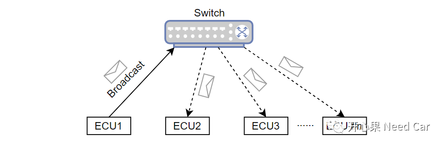
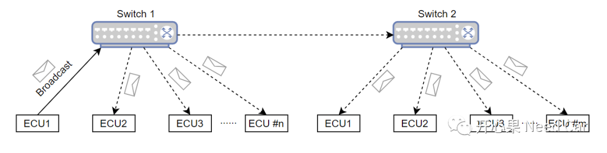
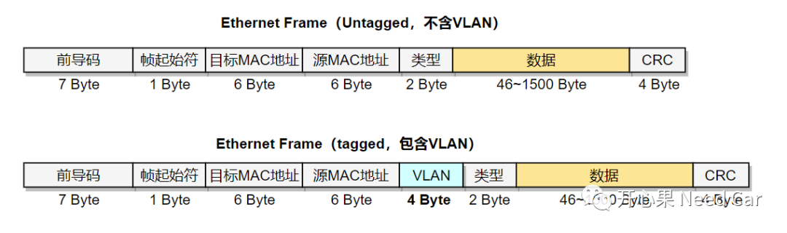
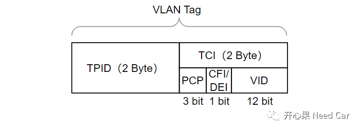
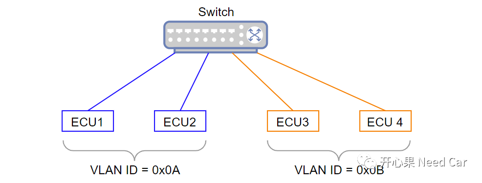
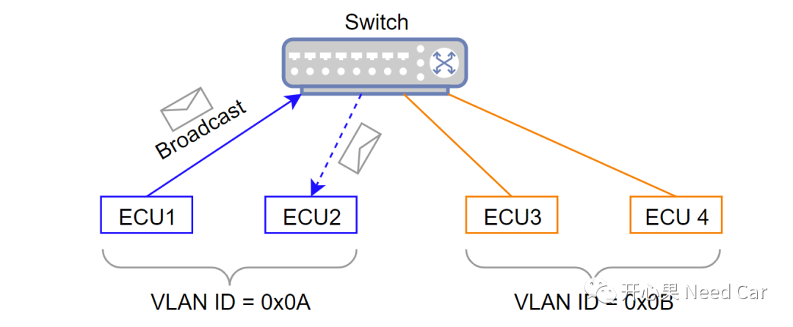
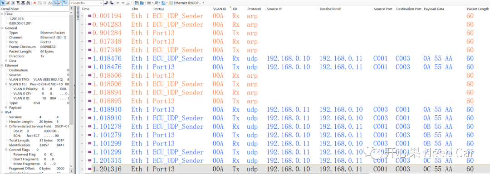

开心果 Need Car · 2023-12-04T07:03:00+08:00 · 微信原文
以太网的开发中，有时需要为节点分配VLAN（Virtual Local Area Network，虚拟局域网）。但是，为什么要为节点分配VLAN呢？本文针对这个话题展开讨论。除此之外，文末给出Lwip（Light weight IP）+TC3xx VLAN实现的源码及注意事项。
1、划分VLAN场景


节点发送ARP的目的是为了获取目标节点的MAC地址，以便于通信。但是，这样的动作却要把信息传遍整个网络，如此，将增加网络负担。如上，只是讨论ARP广播的例子，实际工程中，类似场景还有很多：SOME/IP中的服务发现、未知单播帧的转发等。
所以，面对这些工程场景，应该如何降低网络带宽负载呢？答：可以通过VLAN技术，分割广播域，将信息的传播限定到一定范围。
2、VLAN划分原理
（一）VLAN格式

VLAN Tag包含TPID（Tag Protocol Identifier，标签协议标识符）和TCI（Tag Control Information，数据帧控制信息）两个部分，如下所示：

各参数解释如下：
TPID：表示数据帧类型，0x8100 表示 IEEE 802.1Q 帧（C-VLAN），0x88A8表示S-VLAN；
PCP：Priority Code Point（3 bits），表示数据帧优先级，数值越大，优先级越高；
DEI：Drop eligible indicator（1 bit），丢弃资格标识符，表示 MAC 地址封装是否符合规范格式；
CFI：Canonical Format Indicator（1 bit），标准格式标识符；
VID：VLAN identifier（12 bits），表示帧所属的VLAN。取值范围： 0~4095。
（二）VLAN分割广播域原理
根据项目的实际情况，可以划分不同ECU组，之后，为每组ECU分配一个VID。比如：ECU1、ECU2划分到VID = 0x0A组，ECU2、ECU3划分到VID = 0x0B组，如下所示：


3、Lwip+TC3xx的VLAN实现细节
开源的Lwip虽然是不错的Ethernet学习资料，但是，这并不意味着使用Lwip会一帆风顺。利用Lwip实现VLAN过程中，需要注意以下几点：
（一）netif.c修改
在netif.c的ifx_netif_input()接口中，需要添加ETHTYPE_VLAN，即：接收含有VLAN的以太网帧，修改如下所示：
err_t ifx_netif_input(netif_t *netif){......switch (htons(ethhdr->type)){/* IP or ARP packet? */case ETHTYPE_IP:case ETHTYPE_ARP:case ETHTYPE_VLAN:......
IfxGeth_Eth.c中，本文在接口IfxGeth_Eth_configureMacCore()中添加如下代码，设置VID=0x0A，如下所示：
void IfxGeth_Eth_configureMacCore(IfxGeth_Eth *geth, IfxGeth_Eth_MacConfig *macConfig){.../* Set Send Vlan */IfxGeth_mac_writeQueueVlanTag(geth->gethSFR, IfxGeth_MtlQueue_0, 0x0A);...}
boolean IfxGeth_mac_writeQueueVlanTag(Ifx_GETH *gethSFR, IfxGeth_MtlQueue queueId, uint16 vLanTag){Ifx_GETH_MAC_VLAN_INCL vlan_incl;if (gethSFR->MAC_VLAN_INCL.B.BUSY){return FALSE;}/* VLAN Tag Control in Transmit Packets */vlan_incl.B.VLC = 2;vlan_incl.B.RDWR = 1;vlan_incl.B.CSVL = 0;vlan_incl.B.VLT = vLanTag;vlan_incl.B.ADDR = queueId;gethSFR->MAC_VLAN_INCL.U = vlan_incl.U;// Wait until operation is finishedwhile (gethSFR->MAC_VLAN_INCL.B.BUSY){}return TRUE;}
（三）含VLAN通信数据流

往期精彩回顾